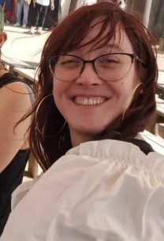

About Me
Hello hello! My name is Aline, and I'm a first-year student at IU Indy. I was born at a very young age and after a few turns of the sun I am reluctantly submitting myself to the mortifying ideal of being known for this assignment.
I was born in Texas but moved to Arizona when I was little, so I have a special and lifelong fondness for the desert. It's way more vibrant than people give it credit for, and there's so much to explore beyond the Grand Canyon! I went to a lot of National Parks and Monuments growing up, but now I mostly visit the Desert Botanical Garden and take tons of pictures. If you ever want recommendations or even to come down for a visit, let me know! :)
My upbringing is also responsible for my love of languages– Christmases were always fun growing up because we had my Puerto Rican father speaking Spanish with his relatives, both my parents speaking French with my French maternal grandmother, and my mother and maternal grandmother practicing the bits of German they still remember (mostly songs and poems from school). I never gained full fluency in any of these, but they still teach me when they can, and I still manage to get bits and pieces mixed up in my head sometimes.
Finally, I have great loves for food and travel that are heavily intertwined. Food is community and love and culture, and I think there's great value in highbrow and lowbrow alike, from splurging on a prix fixe in Las Vegas to drunkenly eating halal hot dogs from a cart in London. The act of sharing food with others got me through the lowest parts of my life, and my travels with others compose some of the highest. Right now my interest takes the form of researching and cataloging all the good and interesting places to eat both at home and wherever I'm traveling to next. I haven't started that research for Finland yet, but leipäjuusto and reindeer are my top two wishlist items!